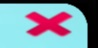
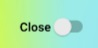
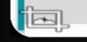

This is play button for start new session. This button appear only if there is internet connected. If there is alredy any session , this button have fuction to overwrite new session on that section.
This is continius button for unpause your saved session. This appear only if there is alreyd any started session. this exsist until app shot down or close app botton presed

This is close button for shutdonw app. Also it clear all saved session .

This is kill switch button for fast delete sector. It alos work for refresh your screen orientation (vertical/horizontal) with others screen setings

This is button for set up perfectly on every screen display configuration .
the proper way to close this app is jus to use home button on your phone, back button or off/on button. The application shoudnt be clear form background proces beacuse there is saved your progres in your ram memory.
you can found out more about code2go on oficial web site and on your favorite social media.
code2go
here is creddits::
code2go is app by 1kinger with used parts from Blocky
code2go is simepl app and perfect for learning to code, with 2 sector for your lerarning progres.
First sector is onrginal from Blocky website and only awaible with internet connection,
other one is offline playabele anywhere anytime just like original.
this app can appear difrently on difrent screen size and/or orientation mode.
but for best user expirience recomendet is open app(code2go) in landscape phone mode for mobile phones.
code2go is ~ 3 MB mb size memory and can be found on android playstore
if there is some preoblems, you can reinstal this app manualy to factory settings in leas than 5 sec.
1kinger
author of this app is 1kinger. He is profi full stack web devolpment and others unknowed talents yet. 1kinger is just self declared artistick name of 25 years old boy from europa that have
and hobby of full stuck solo web devolpment.And 1kinger is trying to make "some good IT things" as good as can be.
you can finde more fressh info on oficial web site and on social median cominuty